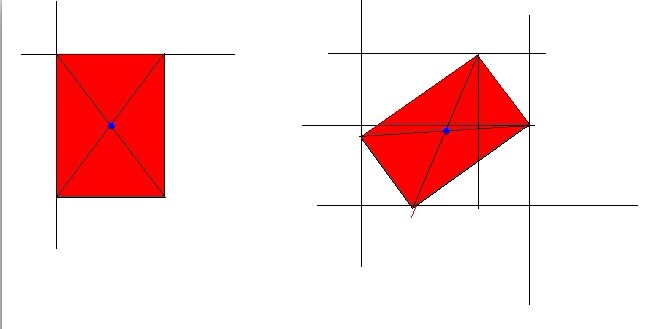
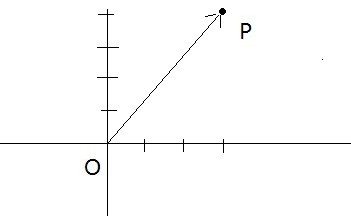

IE下利用Matrix滤镜实现绕中心点旋转2011-12-15 13:16:00
旋转一个元素算是一个比较常见的需求了吧，在支持CSS3的浏览器中可以使用transform很容易地实现，这里有介绍：http://www.css88.com/archives/2168，这里有演示http://www.css88.com/tool/css3Preview/Transform.html，就不再介绍了。
在IE下旋转一个元素，则只能靠滤镜了。
如果只是以90度为单位旋转的话，简单地使用这个滤镜就好：
filter:progid:DXImageTransform.Microsoft.BasicImage(rotation=i)
其中i取0，1，2，3，分别代表旋转90度、180度、270度、360度。
而如果要实现任意角度旋转，则要使用Matrix（矩阵）滤镜。
网上介绍的方法都是这样：
filter:progid:DXImageTransform.Microsoft.Matrix(M11=m11,M12=m12,M21=m21,M22=m22,sizingMethod="auto expand");
设旋转角为x，用弧度表示。那么m11=cos(x),m12=-sin(x),m21=sin(x),m22=cos(x)
实测这个方法有效，但是它会绕元素原来轮廓的左边和上边转动，还是画个图示意一下：

如图所示，图形会贴着上边和左边旋转。
那如果我们要绕中间点旋转的话要怎么做呢？这就说来话长了，得讲到几何的向量方法。
坐标系中，每个点有一个坐标，比如点p(3,4)，横坐标为3，纵坐标为4。
接下来，向量：简单理解为有方向的线段。
将点和原点连接起来，方向从原点指向点，即构成一个向量op。
通过这样的方式，我们就将向量与点一一映射起来了，研究点的时候就可以用向量来研究啦。

接下来，研究旋转的实质，P点绕原点O（顺时针）旋转角度α，即向量OP旋转α，新的点P‘坐标变为(3cosα-4sinα,4sinα+3cosα).
为什么会是这个值，请参阅http://zh.wikipedia.org/wiki/%E6%97%8B%E8%BD%AC（数学里面以逆时针为正方向，所以公式在符号上略有不同）
上面新坐标中，在原坐标上进行的计算的数cosα,-sinα,sinα,cosα刚好就是上上面IE的matrix中的参数m11,m12,m21,m22！
事实上，上面的计算一般会写成矩阵的方式来进行，见维基百科的表示方法。
所以，matrix滤镜的实质是对图形进行坐标的矩阵运算。
上面说的是绕原点O旋转，如果绕的是非原点呢？情况比较复杂，详见http://hi.baidu.com/windsion/blog/item/b4a41951699aa0c9b645ae4f.html。
大致分为三步：
- 整体位移，即把中心点和向量做相应位移，使旋转点变为原点
- 绕原点旋转，和上面说的一样
- 整体位移，再将中心点移回原来的地方去
这个时候，计算的矩阵就变得复杂了（上面文章的最下方）。
而事实上，这个矩阵是可以化简的，详见这里http://stackoverflow.com/questions/5051451/javascript-ie-rotation-transform-maths
最终，我们得到除了上面的m11,m12,m21,m22之外的另外两个数，这两个数在IE的matrix滤镜中表示为Dx,Dy。
将这六个参数写入matrix滤镜，即可绕中心点旋转了。
完整的写法：
progid:DXImageTransform.Microsoft.Matrix(Dx=dx,Dy=dy,M11=m11,M12=m12,M21=m21,M22=m22);
其中
dx=-width/2*cosdeg+height/2*sindeg+width/2,
dy=-width/2*sindeg-height/2*cosdeg+height/2
m11,m12,m21,m22与前面说的一样。
哦哦，对了，微软官方说了http://msdn.microsoft.com/en-us/library/ms532872(v=vs.85).aspx，如果sizingMethod=”auto expand”，那么Dx、Dy是无效的哦。所以去掉就好啦。
最后的最后，sizingMethod是什么意思呢，如果不设它的话，旋转对象的容器大小会是固定的，所以可能有遮挡的情况，自己要调整好大小，而如果它被设为auto expand，就是自动扩展的意思，即旋转时外面的容器大小会自动调整，以便不遮挡正在旋转的元素。